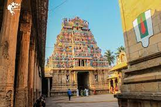
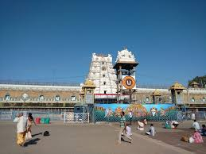
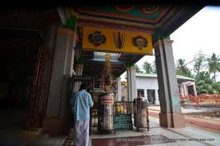

Vaishnava Calendar
Next Ekadasi:
Upcoming:
Daily Chant
Om Namo Narayanaya — 108 times
Recite with Tulasi, offer silent prayer.
Featured Divya Desams

Srirangam — Ranganathaswamy
Bhooloka Vaikuntam — reclining Vishnu. Moksha blessings, Vaikunta Dwara.

Tirumala — Srinivasa
Kaliyuga deity — prosperity, relief from debts, ancestral uplift.

Oppiliappan — Thirunageswaram
Saltless prasadam vow — devotion, marriage boons, purity of mind.
“Where devotion flows, the Divine dwells.” — Vaishnava wisdom
The Twelve Azhwars
Poigai Azhwar
Bhoodath Azhwar
Pey Azhwar
Thirumazhisai Azhwar
Nammalvar
Madhurakavi Azhwar
Kulashekara Azhwar
Periyalvar
Andal
Thondaradippodi
Thirumangai Azhwar
Tōṉdaradippodi
Divya Desam Yatra Guide
• Begin before sunrise, chant Govinda